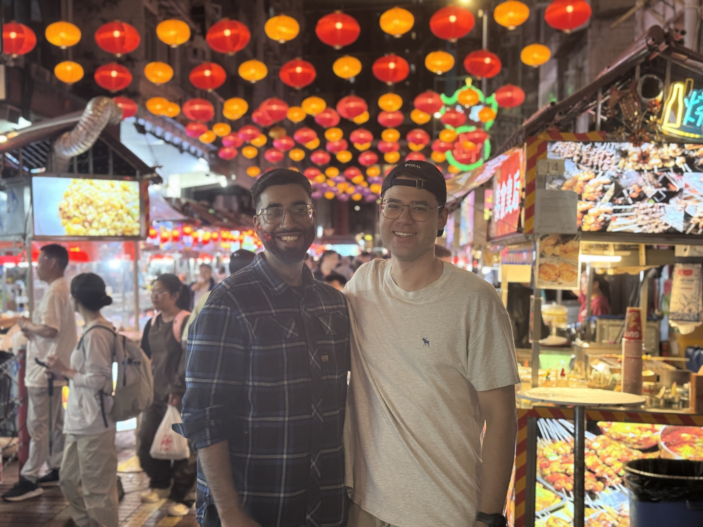
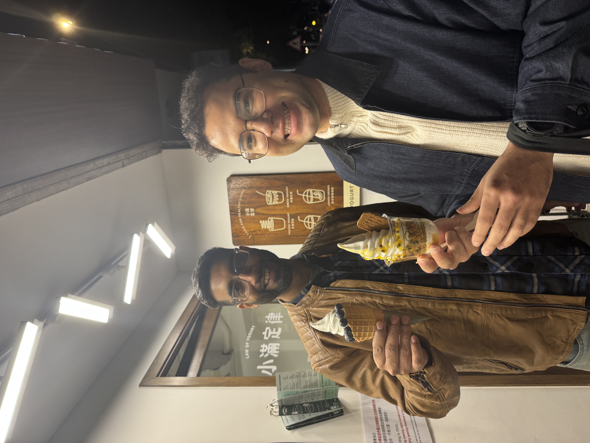

It started the way the best things do — by accident.
I was deep in my engineering degree at RWTH Aachen, drowning in the kind of maths and physics that makes you question every life decision that led you to that lecture hall. The formulas blurred. The problem sets piled up. I needed help — not the textbook kind, but the kind that makes you see the problem differently.
That’s when I found Ananya.
Es begann so, wie die besten Dinge beginnen — zufällig.
Ich steckte mitten in meinem Ingenieurstudium an der RWTH Aachen, versunken in der Art von Mathe und Physik, bei der man jede Lebensentscheidung hinterfragt, die einen in diesen Hörsaal geführt hat. Die Formeln verschwammen. Die Aufgaben türmten sich. Ich brauchte Hilfe — nicht die Lehrbuch-Sorte, sondern die, die einen das Problem anders sehen lässt.
Dann fand ich Ananya.
He taught me how to think.”
Er brachte mir bei, wie man denkt.”
Ananya was a physicist at RWTH — the kind of person who could take a concept that had defeated you for weeks and, in twenty minutes over coffee, make it feel obvious. He never just solved the equation for me. He dismantled the way I was thinking about it, rebuilt it from scratch, and handed it back clearer than before.
Session after session, something shifted. It wasn’t just maths anymore. He became my mentor. Then one of my closest friends. The line between tutor and friend dissolved somewhere between thermodynamics and late-night conversations about what we wanted to build with our lives.
Ananya war Physiker an der RWTH — die Art Mensch, der ein Konzept, an dem man wochenlang gescheitert ist, in zwanzig Minuten bei einem Kaffee selbstverständlich erscheinen lässt. Er löste nie einfach die Gleichung für mich. Er zerlegte meine Denkweise, baute sie von Grund auf neu auf und gab sie mir klarer zurück als zuvor.
Sitzung für Sitzung veränderte sich etwas. Es ging nicht mehr nur um Mathe. Er wurde mein Mentor. Dann einer meiner engsten Freunde. Die Grenze zwischen Tutor und Freund löste sich irgendwo zwischen Thermodynamik und nächtlichen Gesprächen darüber auf, was wir mit unserem Leben aufbauen wollten.


What Ananya gave me wasn’t a grade. It was a belief — that the right teacher doesn’t just transfer knowledge, they transform the person receiving it. He showed me that teaching, done right, is the most powerful form of engineering there is. You’re not building a machine. You’re building a mind.
That idea stayed with me long after the exams were over. It followed me from Aachen to Hong Kong, from lecture halls to maker spaces. It whispered every time I watched a student’s face light up the way mine once did across a coffee table from Ananya.
Was Ananya mir gab, war keine Note. Es war eine Überzeugung — dass der richtige Lehrer nicht nur Wissen weitergibt, sondern den Menschen verändert, der es empfängt. Er zeigte mir, dass Lehren, richtig gemacht, die mächtigste Form des Ingenieurwesens ist. Man baut keine Maschine. Man baut einen Geist.
Diese Idee blieb, lange nachdem die Prüfungen vorbei waren. Sie folgte mir von Aachen nach Hong Kong, von Hörsälen zu Maker Spaces. Sie flüsterte jedes Mal, wenn ich das Gesicht eines Schülers aufleuchten sah — so wie meines einst gegenüber von Ananya am Kaffeetisch.
They rewire it.”
Sie verkabeln ihn neu.”
That’s why I founded CreatorPort.
Not because I had a business plan. Not because the market research checked out. But because I’d experienced firsthand what happens when someone teaches you to think — really think — and I wanted to give that to as many people as possible.
CreatorPort exists because of a friendship that started at a blackboard. Because a physicist in Aachen took the time to see a struggling student not as a problem to solve, but as a mind worth investing in. Every workshop we run, every student we teach, every robot we build together — it all traces back to those sessions.
To Ananya. To the belief that the right mentor changes everything.
Deshalb habe ich CreatorPort gegründet.
Nicht weil ich einen Businessplan hatte. Nicht weil die Marktforschung stimmte. Sondern weil ich am eigenen Leib erfahren hatte, was passiert, wenn jemand dir beibringt zu denken — wirklich zu denken — und ich wollte das so vielen Menschen wie möglich weitergeben.
CreatorPort existiert wegen einer Freundschaft, die an einer Tafel begann. Weil ein Physiker in Aachen sich die Zeit nahm, einen kämpfenden Studenten nicht als Problem zu sehen, sondern als einen Geist, in den es sich lohnt zu investieren. Jeder Workshop, den wir durchführen, jeder Schüler, den wir unterrichten, jeder Roboter, den wir gemeinsam bauen — alles führt zurück zu diesen Sitzungen.
Zu Ananya. Zu der Überzeugung, dass der richtige Mentor alles verändert.